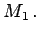
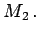

Inhalt Index DeskTop Bronstein

 Algebra und Diskrete Mathematik Algorithmen der Graphentheorie Matchings
Algebra und Diskrete Mathematik Algorithmen der Graphentheorie Matchings


Man spricht in diesem Zusammenhang von einem Austauschverfahren.
| Beispiel |
|
Im Graphen der folgenden Abbildung ist ({1,2},{2,3},{3,4}) ein zunehmender alternierender Weg bezüglich des Matchings  Mit dem Austauschverfahren erhält man daraus das Matching  |